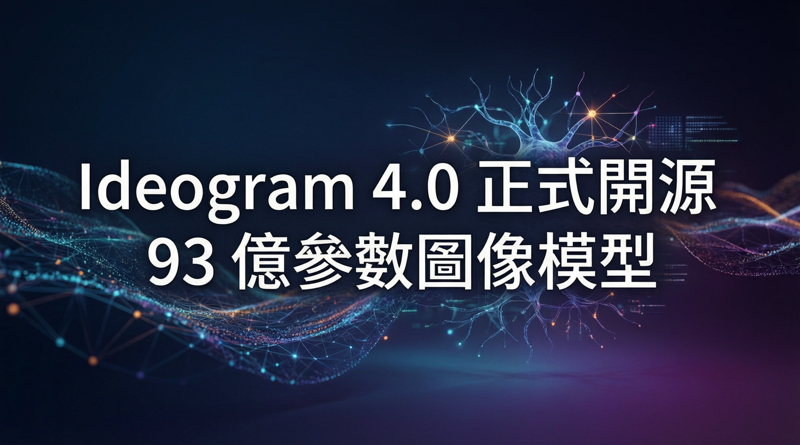

首個達到設計專業水準的開源圖像生成模型，文字渲染超越所有競爭者

AI 圖像生成新創 Ideogram 正式發布 4.0 版本並開源，開放權重（Open Weight），成為首個達到設計專業水準的開源圖像生成模型。93 億參數、支援本地部署與微調，效果直逼 ChatGPT 等閉源模型，在排版和文字渲染維度上甚至超越所有競爭者。
Ideogram 4.0 的開放策略分為兩層：提供多種量化版本，讓擁有消費級高階顯示卡的創作者可以在本地完全掌控這款模型。不需要依賴雲端服務，不需要將資料傳到外部伺服器，還可以根據自己的品牌風格進行微調（fine-tuning）。
對於重視隱私和資料主權的企業和個人創作者而言，這是一個相當有吸引力的選項。
Ideogram 4.0 並非只有一個孤零零的模型檔案。Ideogram 同步開放了多個平臺的使用管道，包括：
除了模型本身，Ideogram 的產品端也同步更新了多項設計導向功能，包括可編輯文字和圖層功能即將推出。這個更新讓 Ideogram 從單純的圖像生成工具，轉型為完整的設計工作流解決方案。
Ideogram 4.0 的發布代表一個重要訊號：開放權重模型在設計級圖像生成領域，已經逼近閉源前線。在 Design Arena 上，Ideogram 4.0 僅落後 OpenAI 和 Google 的閉源模型，而在排版和文字渲染這兩個專業設計師最關心的維度上，它甚至超越了所有競爭者。
這種策略讓人想起 Meta 在 LLM 領域的做法：用開放權重換取社羣生態，用生態系鞏固技術地位。Ideogram 選擇在圖像生成領域走同樣的路，而且是在一個仍以閉源為主流的市場中。
當然，商業授權仍然是門檻。模型權重的 Non-Commercial 協議意味著企業若要將其整合進產品或服務中，需要另外付費取得商業授權。這是開源與「免費使用」之間的界線，也是 Ideogram 的商業模式所在。
Ideogram 4.0 擁有 93 億參數，是目前最大的開源圖像生成模型之一
首個達到設計專業水準的開源圖像模型，權重完全開放
在排版和文字渲染維度上超越所有競爭者，業界領先
完全本地運行，無需雲端，保護隱私和資料主權
| 維度 | Ideogram 4.0 開源 | 閉源前線模型 |
|---|---|---|
| 文字渲染 | 第一 | 落後 |
| Design Arena 總分 | 第三（落後 OpenAI/Google） | 前二 |
| 部署方式 | 本地 / 完全掌控 | 僅雲端 |
| 微調支援 | 完整支援 | 通常不支援 |
| 隱私保護 | 完全本地，資料不外流 | 需上傳雲端 |
| 商業授權 | 付費取得 | 已包含在 API 費用中 |
💬 產業意義：Ideogram 4.0 開源的意義不僅是一個模型的發布，而是代表開放權重模型在設計級圖像生成領域已經能與閉源巨頭正面競爭。這與 Meta 在 LLM 領域的成功策略如出一轍：用開源換生態，用生態鞏固地位。